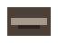
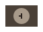
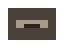
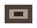

A tiny conductor for agents in herdr
mymate
A self-contained conductor that watches, dispatches, and leads coding agents across herdr panes — no big runtime, no installed app.
Simple bash command + skill file. Everything you need to coordinate a crew of agents in one lightweight package.
01 / What you get
Core capabilities
mymate open [name] [--kind KIND]
Like firstmate's open-in-herdr: pop a focused mymate conductor pane you can talk to directly, preloaded with the conductor contract. Reuses the pane if the conductor is already open.
mymate status
Observe the whole crew: every herdr workspace and every agent, with live state (idle, working, blocked, done, unknown). See what's happening across all your agent workflows.

mymate dispatch ""
Open a sibling pane, start a worker agent in it, hand it a skill and the brief, and report when it settles. Distribute work across your agent team efficiently.
mymate watch
Keep an eye on the crew; it prints when an agent changes state, turns blocked, or finishes. Monitor your agent workflows in real-time.

Skill management tools
Skills fetch, add, new. Download herdr's own current agent skill into skills/herdr.skill.md; add any skill.md to base a worker on; scaffold a starter worker.

02 / Layout
File structure
The CLI (bash, works in Git Bash and any POSIX shell). Single entry point for all mymate commands.
Thin herdr CLI wrappers (JSON in, IDs parsed from JSON). Bridge between mymate and herdr.
The conductor contract your primary agent loads. Defines what the conductor can do.
herdr's own current agent skill (run mymate skills fetch). Worker agent template.
Template for a worker agent's skill. Starting point for creating new agent workers.
03 / Setup
Quick start
Prerequisites
herdr installed and running, `jq` (optional but recommended), and your worker kinds available via `herdr agent` (opencode, codex, claude, and many more are supported by herdr itself.
Installation
Clone the repository or use this folder. Make the CLI reachable:
chmod +x bin/mymateAdd to your shell profile for permanent access:
alias mymate="$PWD/bin/mymate"
Launch
Open herdr, start a pane, and in it run your primary agent with mymate.skill.md loaded (for opencode, run `opencode` in this folder; the conductor skill is at mymate.skill.md). The conductor takes over from there.
04 / Safety posture
Trust & security
`dispatch`, `talk`, and `keys` refuse to run outside a herdr pane (`HERDR_ENV=1`); `status` and `read` are read-only and allowed anywhere.
`dispatch` always uses a sibling pane (`--no-focus`) and never touches a pane, tab, or workspace the captain did not ask about.
IDs are parsed from herdr's JSON responses, never guessed from ordering. End-to-end transparency.
Windows Integration
From a Herdr-managed PowerShell pane, run `.\watch-herdr.ps1`. The installed event plugin receives native `pane.agent_status_changed` events without polling and forwards high-priority entries to the conductor inbox.
05 / Contact
Let's connect.
Open to discussions about agent coordination, herdr integration, or CLI tool development. Feel free to reach out with questions, feedback, or collaboration ideas.
hello@mymate.orgAachen, Germany · MIT Licensed